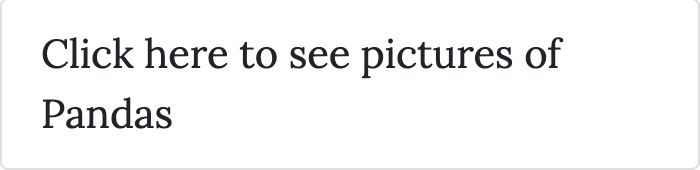
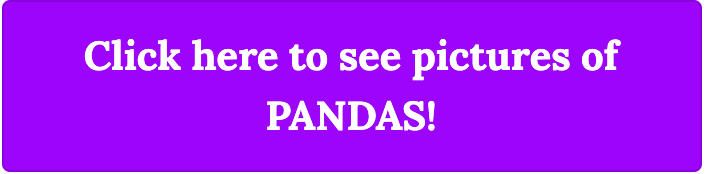

The Goal
The goal I decided to set up on my blog was a CTA link on my homepage that would hopefully drive users to click on a link to take them to a post I had created with photos of my favorite animal, pandas. I chose this because I thought it would be fun and feel like everyone could use a little cuteness in their day.
 Original CTA ButtonTo implement the goal I followed steps outlined in the Google Analytics support docs (which can be found here) as well as created a funnel to see how users were getting there. .
The Content Experiment
In hopes to drive more traffic to this page and enhance my results, I decided to restyle the CTA link with a different font and flashier colors to try and make it more attractive to users. Updated CTA Button
After reviewing the report and trying to troubleshoot, I followed up with some of my users to see if they felt the button made a difference in terms of catching the eye and drawing more users to the Panda page. All of them felt that it did and stated that they even followed the link, which somehow did not get collected in the report. This goes to show that error in set up can be one of the many reasons why reports may be skewed and not reflect the correct statistics.
Unfortunately, an error took place at some point during the experiment set up which led to some skewed results. The traffic to the page managed to be recorded, however none of the conversions from the visitors clicking on and following the link were not; Needless to say, the results were not what I had expected.

After reviewing the report and trying to troubleshoot, I followed up with some of my users to see if they felt the button made a difference in terms of catching the eye and drawing more users to the Panda page. All of them felt that it did and stated that they even followed the link, which somehow did not get collected in the report. This goes to show that error in set up can be one of the many reasons why reports may not tell 100% of the story.
If I were to continue building this site, I would definitely give the content experiment another go to get an accurate report of how much styling affects driving users to specific links. I would also try to make it more visually appealing by adding different pictures, as well as adding more content to the home and about pages. I would also run more analytics tests to see where there is room for improvement on my site and determine where people are dropping off or not staying engaged.